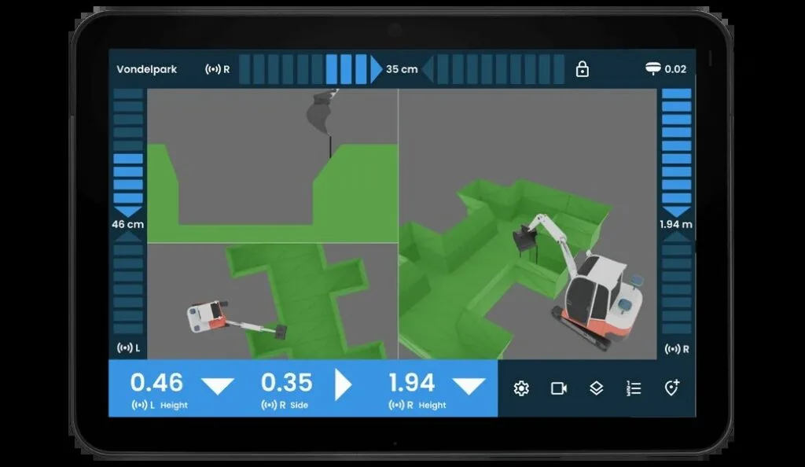
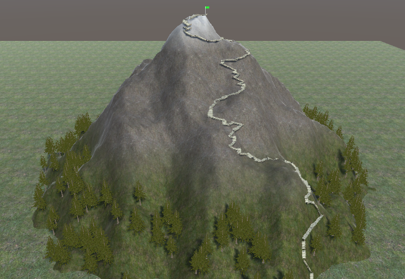

Projects
A few things I've built and projects I've worked on over the years.

UNI-Machine (marXact)
3D GPS machine control for excavators. Load in a design, follow it live from the cabin, and dig to the right depth and slope without pegs or manual surveying. The KLIC map runs in the background so you always know where the cables and pipes are. I've been on the team for 2,5 years, working on the UI, code structure, new features, customer support and QA, and picking up UX/UI design, code architecture, C# in Unity, REST APIs and CAN bus along the way.

Mountain meets Procedural Content Generation
A procedurally generated mountain environment in Unity, built from layered Perlin noise so the terrain never relies on a predefined layout. An A* pathfinding algorithm calculates walkable routes that account for slope cost and dodge trees, and a custom shader applies different textures by altitude (base, timberline, peak).

Thales Naval Warfare Game
Thales Naval warfare is a game developed by Thales Group The netherlands to introduce new people to Thales and their products in a playfull but meaningfull way. During my internship at Thales I worked on a thesis involving supporting the process of balancing.

Chase VR Experience
A VR shopping experience built for Chase, whose beach shop wanted to bring that same feel to their second store 50km inland. Built together with a student group, it let customers browse the beach shop in VR from the other location. I worked on the clothing-fitting system for the mannequins, the XR rig, and animations driven by an exo suit, and picked up VR/XR development along the way.